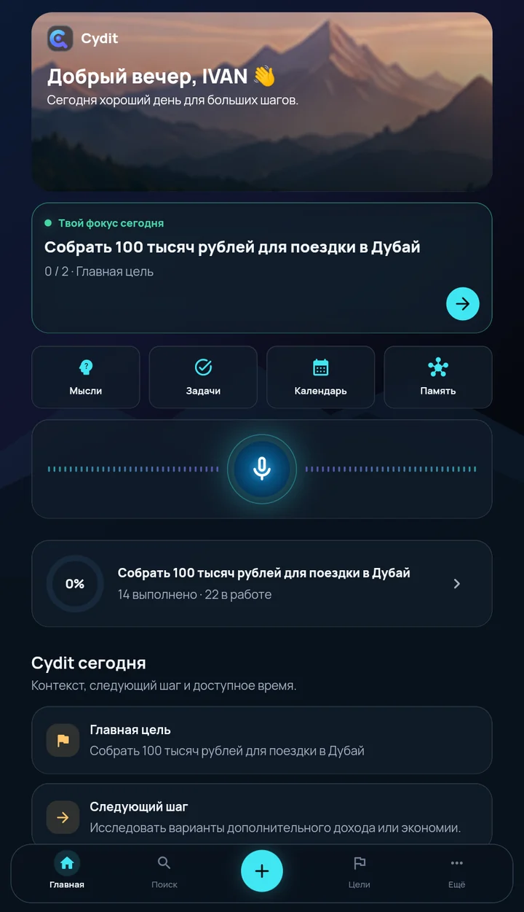
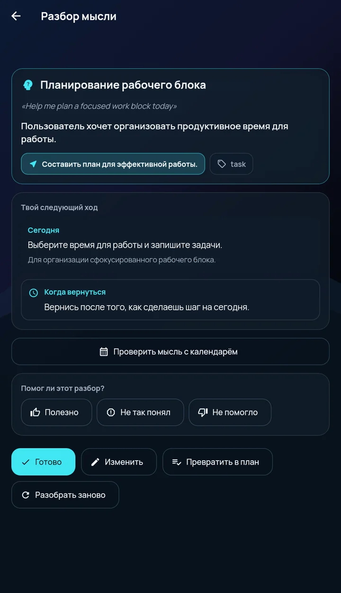
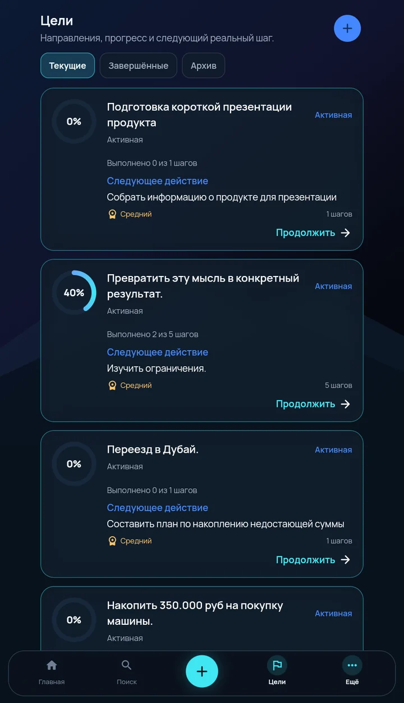

Память, которая связывает
Каждая мысль сохраняется с типом и тегами и связывается с тем, о чём ты думал раньше. К ней легко вернуться, когда она снова нужна.
Закрытая бета · Android
Говори или пиши как есть. Cydit понимает каждую мысль и превращает её в память, цели, задачи и следующий шаг — чтобы ничего не терялось, а всё двигалось вперёд.

Наша идея
Твой разум не создан быть картотекой. Cydit даёт каждой мысли место, где она живёт, связывается и превращается в действие.
Суть продукта
Чат отвечает и забывает. Cydit помнит, связывает и доводит мысль до шага.
Каждая мысль сохраняется с типом и тегами и связывается с тем, о чём ты думал раньше. К ней легко вернуться, когда она снова нужна.
Нажми и расскажи, что важно, или просто напиши. Cydit расшифрует и сохранит мысль.
Разбор выделяет суть, намерение и цель — и предлагает следующий ход.
Мысль становится целью с шагами. Видно, что сделано и какое действие следующее.
Cydit видит события календаря на устройстве и подсказывает окно для сфокусированной работы.
Цели и задачи появляются только после явного подтверждения. Cydit предлагает — решаешь ты.
Как это работает
«Хочу через неделю поехать в Дубай, но мне не хватает 100 тысяч рублей».
Не хватает 100 тысяч рублей для поездки через неделю.
Пример собран из реальных экранов приложения.
Реальные экраны
Скриншоты сняты с бета-версии приложения, а не нарисованы для сайта.


Сценарии
Фиксируй стратегию, идеи и решения — не теряй нить между встречами.
Превращай вспышки идей в планы и архив, по которому легко искать.
Собирай вопросы, выводы и идеи в одну память, которая растёт вместе с тобой.
Разгрузи память — Cydit помнит, раскладывает и напоминает, а ты в фокусе.
Почему Cydit
| Что сравниваем | Заметки | Чат-бот | Cydit |
|---|---|---|---|
| Что делает с мыслью | Хранит текст | Отвечает на вопрос | Разбирает: суть, намерение, цель |
| Память | Только то, что записал сам | Чаще всего — в пределах диалога | Связывает мысли между собой |
| Порядок | Папки и теги вручную | Лента переписки | Тип и теги ставятся при разборе |
| Что дальше | Решаешь сам | Совет в ответе | Цель, шаги и следующий ход |
| Возврат к мысли | Если вспомнишь | Если найдёшь диалог | Фокус дня и напоминания |
Статус
Сейчас · закрытая бета
Дальше
Тарифы
Режимы отличаются числом AI-запросов и глубиной работы с памятью. Покупки появятся позже — цены объявим вместе с ними.
Базовый режим для старта
Режим для ежедневной работы
Максимальный режим для AI и памяти
Приватность
Cydit хранит память под твоим контролем и даёт инструменты для управления данными.
Доступ к данным закрыт авторизацией и правилами безопасности.
Для разбора мысль передаётся через защищённый AI-шлюз. Содержимое ответов не пишется в аналитические логи.
Текст мыслей и ответы AI не используются в продуктовой аналитике.
Данные можно экспортировать, а аккаунт — удалить в любой момент.
FAQ
Cydit — AI-операционная система для мышления. Ты фиксируешь мысль голосом или текстом, а Cydit превращает её в память, цели, задачи и следующий шаг, к которым можно вернуться в любой момент.
Заметки хранят то, что ты записал. Чат отвечает на вопрос и идёт дальше. Cydit разбирает мысль, связывает её с прежними и доводит до цели и следующего шага.
Нет. Тип и теги мысль получает при разборе. Цели и задачи Cydit предлагает сам, а создаёт их только после твоего подтверждения.
Сейчас идёт закрытая бета на Android. Версии для iOS и веба — в планах.
В бете покупок нет. В приложении три режима — FREE, PLUS и PRO: они отличаются числом AI-запросов и глубиной работы с памятью. Цены объявим, когда появятся покупки.
Память хранится под твоим контролем: данные можно экспортировать, а аккаунт — удалить вместе с мыслями, целями и задачами. Текст мыслей и ответы AI не попадают в продуктовую аналитику.
Оставь почту в форме ниже — напишем, когда откроем доступ.
Ранний доступ
Оставь почту — напишем, когда откроем доступ к бете Cydit.